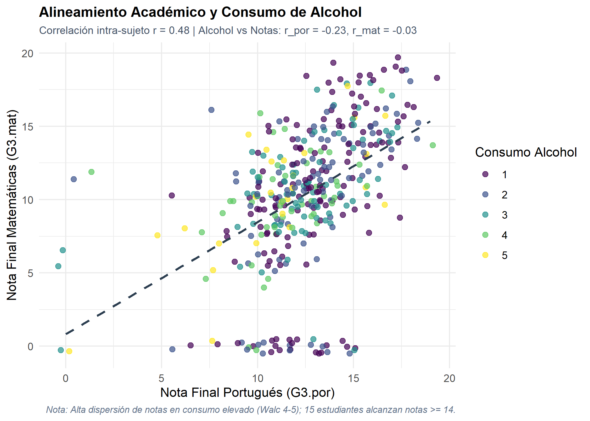
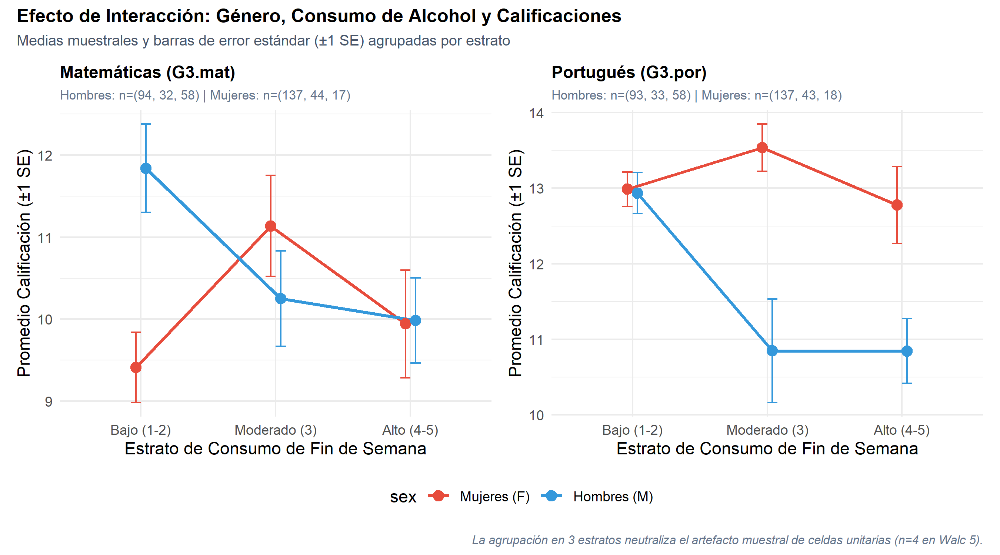
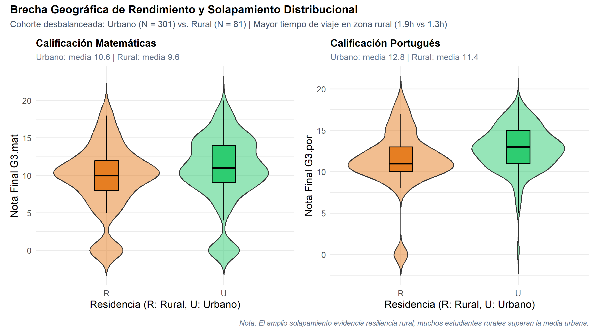
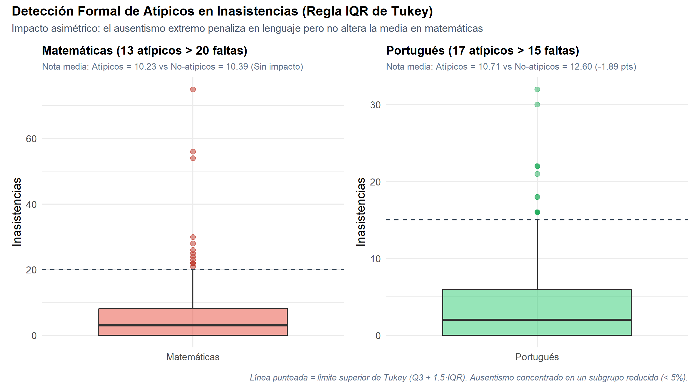

Análisis Exploratorio e Inferencia Descriptiva en Cohorte Unificada (N = 382)
Maestría en Inteligencia Artificial — Universidad de La Sabana
2026-09-01
[0:00 - 0:28 | 28s] Tema 3 Oficial Cohorte Unificada N = 382 Límite: 150 segundos
Pregunta Central de Investigación
«¿Cómo se relacionan el consumo de alcohol y la zona de residencia con las calificaciones y las inasistencias, y qué tan distinto es este patrón entre hombres y mujeres?»
Objetivos del Estudio
Dimensiones de la Cohorte
[0:28 - 0:50 | 22s] Metodología Cortez & Silva (2008) Control de Confusión
Estrategia metodológica para aislar el efecto de hábitos personales controlando factores socioeconómicos y biológicos.
1. Cruce Determinista
school, sex, age, address, famsize, Pstatus, Medu, Fedu, Mjob, Fjob, reason, nursery, internet.2. Control Intra-Sujeto
3. Calidad y Trazabilidad
SqliteSource bajo el principio DIP.checkmate.[0:50 - 1:14 | 24s] Dispersión Bivariada G3 Efecto Ancla Walc

Consistencia Académica Dominante
Dispersión y Resiliencia
[1:14 - 1:36 | 22s] Análisis Bifactorial de Medias Estratos Balanceados (±1 SE)

Estratos Balanceados y Control Muestral
Divergencia por Asignatura
[1:36 - 1:53 | 17s] Distribuciones Híbridas Violín+Boxplot Solapamiento y Resiliencia

Brecha Geográfica de Medias
Solapamiento Distribucional
[1:53 - 2:10 | 17s] Criterio de Tukey (IQR) Impacto Asimétrico en Notas

Detección Formal de Atípicos
Impacto Asimétrico en el Rendimiento
[2:10 - 2:30 | 20s] Síntesis Estratégica Decisiones Informadas por Datos
Síntesis de hallazgos estadísticos orientados a la toma de decisiones y diseño de políticas educativas.
1. Hábitos y Complejidad
2. Equidad Territorial
3. Intervención Asimétrica
¡Muchas Gracias! • Juan Nicolás Patiño Rodríguez
Chrome bloquea la cámara en enlaces file:/// por seguridad.
Para activar tu cámara, ejecutá en terminal:quarto preview actividades/02-estadistica-descriptiva/presentacion.qmd